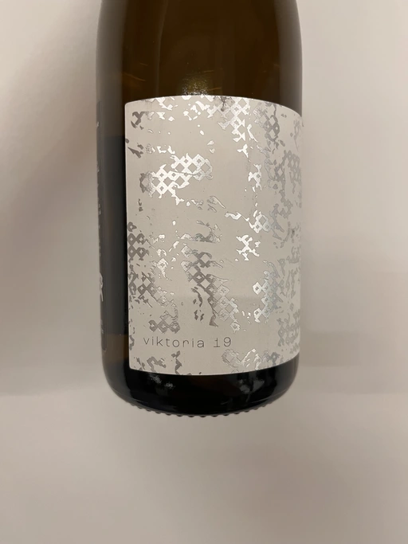
- Type
- White Still, Dry
- Producer
- Krasna Hora
- Vintage
- 2019
- Location
- Czech Republic, Moravia
- Grapes
- Chardonnay, Pinot Gris, Pinot Blanc
- Alcohol
- 12.5
- Sugar
- 0.5
- Price
- 602 UAH
- Cellar
- N/A
Producer
Small wine producer from Czech Republic.
Ratings
2022-12-05 - 8.00
After drinking so many interesting red wines, refreshment is a must. Who would guess that this wine is so gorgeous? Well, at least I bought it simply because I respect Krásná Hora, and usually, I enjoy their wines. Baked apple, Roquefort, honey, flint, and sea breeze. Almost full-bodied yet fresh and well-balanced, with a long and flavourful aftertaste.
Related
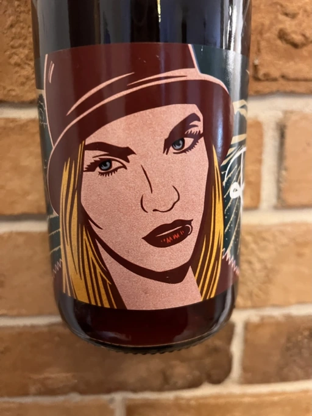
Krasna Hora
Ruby - 2020
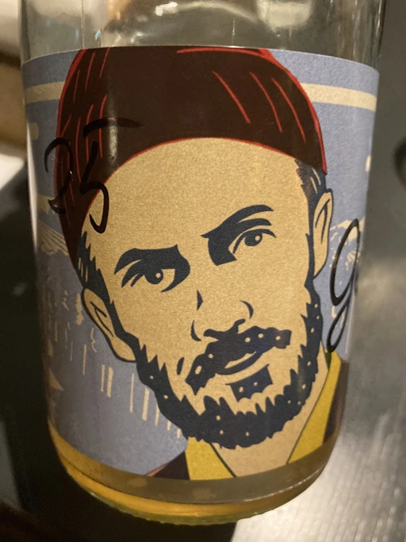
Krasna Hora
Herr Gewürtz - 2019
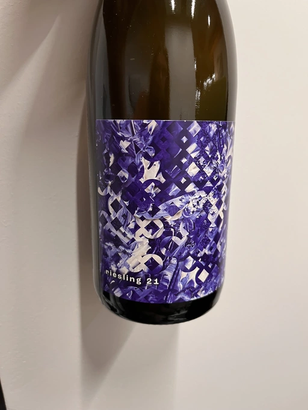
Krasna Hora
Riesling - 2021
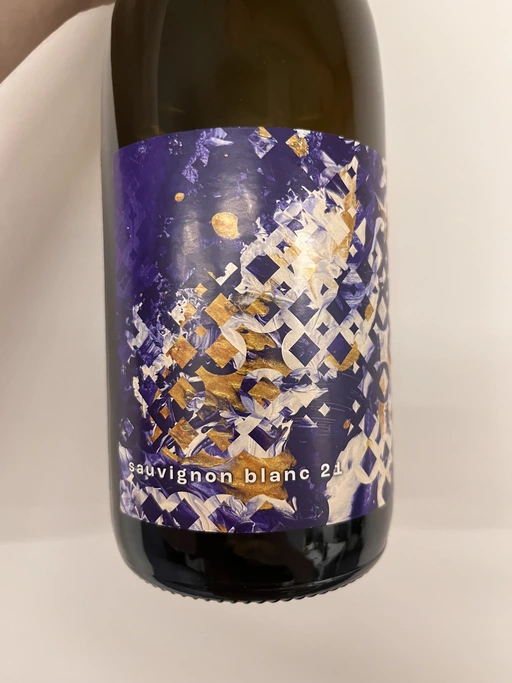
Krasna Hora
Sauvignon Blanc - 2021

Krasna Hora
Pinot Noir - 2019
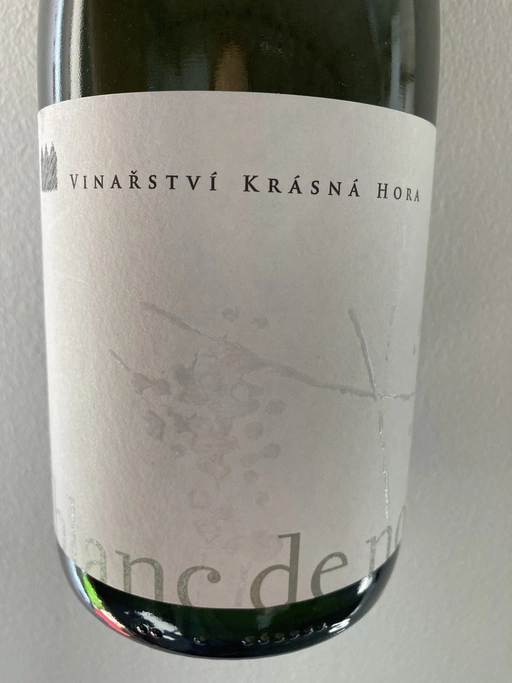
Krasna Hora
Blanc de Noir Sekt - 2018

Fratelli Alessandria
Speziale Verduno Pelaverga - 2019
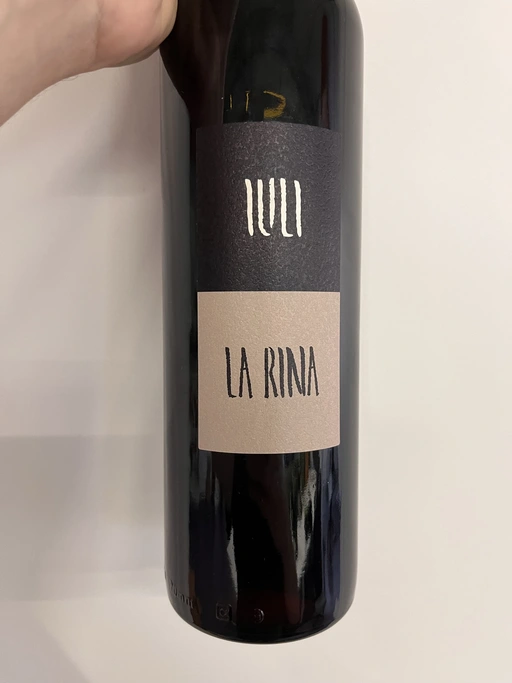
Iuli
La Rina - 2018
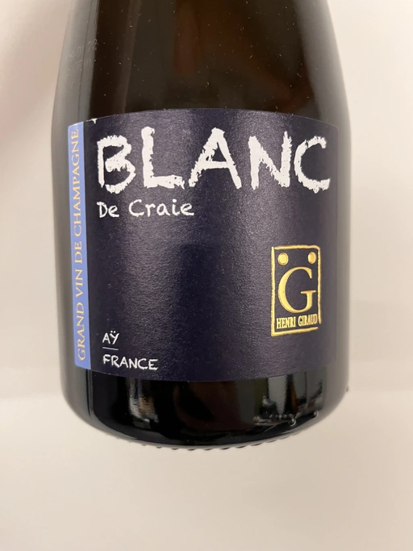
Henri Giraud
Blanc de Craie - NV
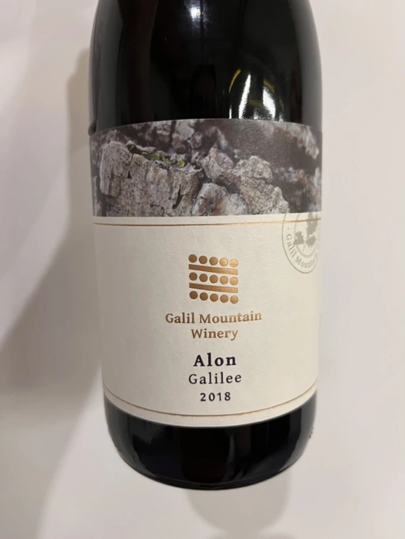
Galil Mountain
Alon - 2018
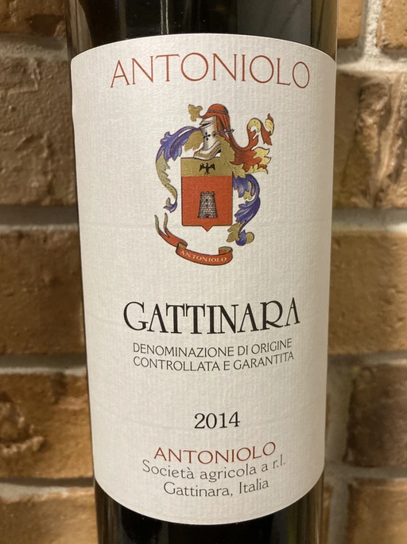
Antoniolo
Gattinara - 2014
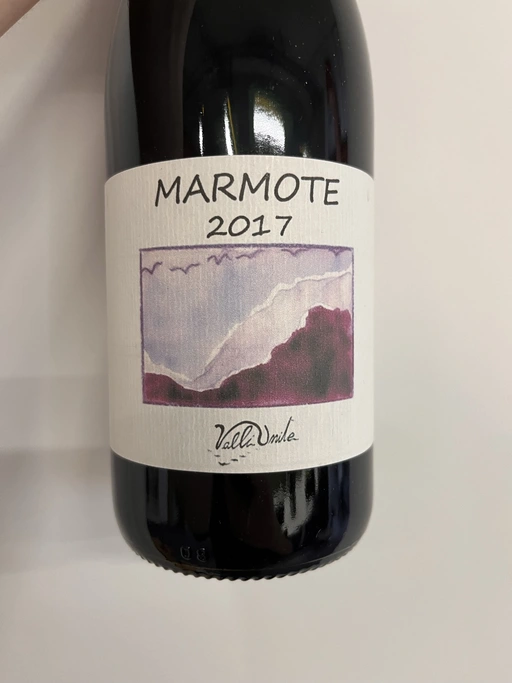
Valli Unite
Marmote - 2017
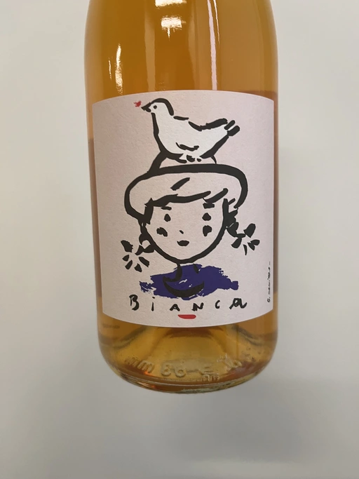
Cascina Tavijn
Vino Bianca L.B01/2021/22 - 2021
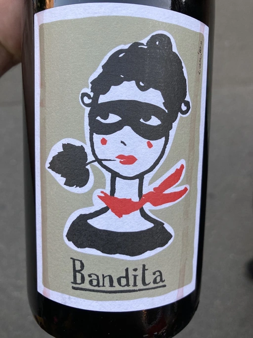
Cascina Tavijn
Bandita - 2016
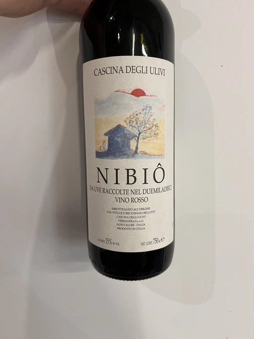
Cascina Degli Ulivi
Nibiô - 2010
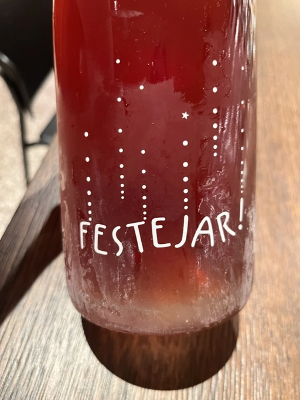
Patrick Bouju
Festejar! Rosé - 2021